Mortality and Morbidity
Cardiology Conference
Division of Cardiology, Department of Medicine, University of Illinois Chicago
3/27/23
Introduction
Outline
- Overview of M&M Conference
- Objectives
- Case Introduction
- Pre-interventional Planning
- Operative Course
- Pacemaker
- Left Atrial Appendage
- Aortic Valve
- Discussion, Conclusion
Overview of M&M Conference
- M&M have evolved to focus on system-level problems (e.g. root cause analyses), a paradignm shift after the publication “To Err is Human” (~ Institute of Medicine, 1999)
- M&M conferences originally developed for surgical/procedure fields, but now have spread to medical discplines
- Certain medical disciplines have developed M&M subspecialty guidelines
- Recently, a proposed framework has been identified for Cardiology M&Ms, emphasizing roles of fellows and early-career physicians
| Select diverse cases |
| Discuss 2 to 3 cases over 60 min |
| Present a conference that is fellow-led and faculty-sponsored |
| Poll audience to enhance participation |
| Employ cause-and-effect diagrams for system improvement efforts |
| Review guidelines to enhance provider education |
| Involve cross-departmental input if needed |
| Conclude with action items to improve the quality and value of care provided |
| Highlighted in this table are the necessary components for a dynamic, interactive, and multidisciplinary M&M conference. |
Figure 1: A Modern Cardiology Morbidity and Mortality Conference Outline (McNamara2019?)
Objectives
- Identify system-based issues in a complex case
- Describe interdisciplinary challenges in cardiovascular care
- Propose potential system-based implementations to improve outcomes
- Consider changes in clinical knowledge and evidence that may impact medical decision-making
- “Be kind” ~ Professor Avital
Patient Summary
Patient:
- 58 year old gentleman
- Prior kidney transplant in 2015, on immunosuppression
- Long-standing persistent AF on DOAC
- PH on sildenafil, multifactorial
- moderate to severe AS, low-flow low gradient
- Moderate MR with moderate MS
Presentation:
- Increasing exertional dyspnea/fatigue
- In the setting of chronic smoking, valvular disease, and AF
- Evaluation for potential valve replacement
Pre-interventional planning
Aortic valve evaluation (-2y, 4m)
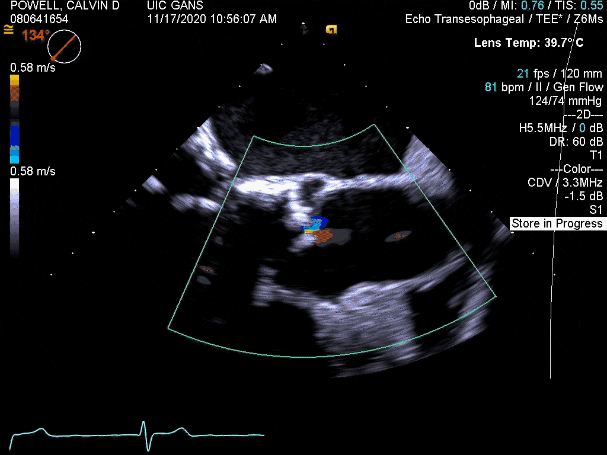
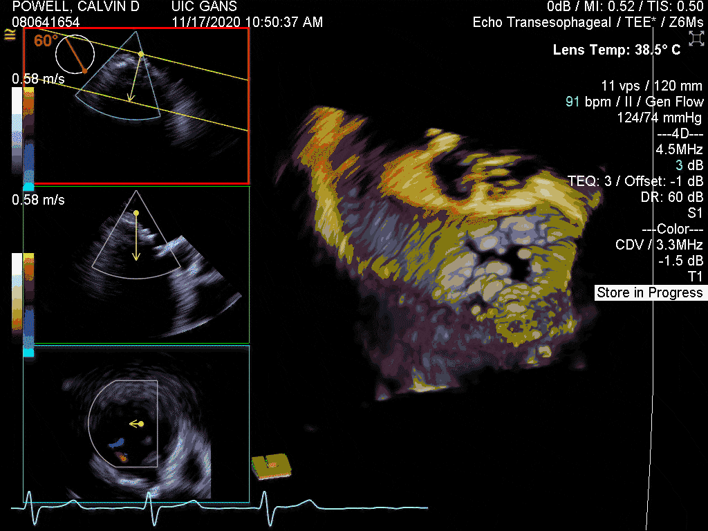
Moderate central aortic regurgitation. Valve area of 1.27 cm2 by planimetry consistent with moderate aortic stenosis.
Moderate thickening/calcification of the mitral anterior and posterior leaflets. The posterior leaflet is restricted, leading to moderate posteriorly directed mitral regurgitation, with systolic blunting in the pulmonary vein flow pattern.

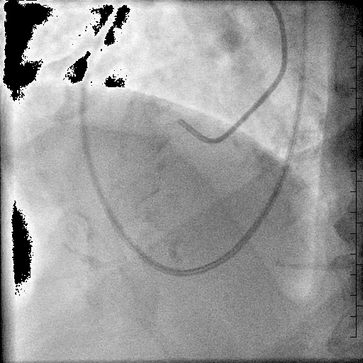
Low-flow low gradient severe aortic valve stenosis with improvement following dobutamine infusion suggestive of moderate to severe aortic valve stenosis.
No angiographic evidence of obstructive coronary artery disease
Figure 4: Rhythm strip at time of cardiac cath
Structural consult (-2y, 4m)
Given his thorough evaluation his aortic stenosis remains the most likely cause of his symptoms and I would favor proceeding with aortic valve replacement. Given his young age, surgical aortic valve replacement is probably favored. His STS PROM is 1.7%. If TAVR is chosen he will need a TAVR protocol CTA of chest, abdomen and pelvis. I will refer him to be evaluated by cardiac surgery and then we will have a heart team meeting and decide the best route to go. I discussed this with the patient and his wife and they expressed understanding.
Findings:
- NYHA II
- AF on apixiban
- CVA
- ESRD with transplant, baseline creatinine of 1.8
- Moderate to severe AS
- Cardiac cath with low-flow, low-gradient AS (mean of 23, AVA 0.86)
Recommendations:
- Refer to CT surgery
- Heart team meeting
- Would need CT TAVR protocol
CTS consult (-2y, 2m)
Patient56-year-old man who has history of hypertension, chronic renal failure status post kidney transplant in 2015 with reasonable function with a recent creatinine of 1.8. The patient has also history of atrial fibrillation on apixaban and since May he has been experiencing symptoms of shortness of breath on exertion.
Findings:
- Atrial fibrillation on apixiban
- TTE: mild AS, moderate MR, valve area of 1.4 cm
- LHC: with valve area estimate at 0.8 cm
- TEE: unable to be found
Recommendations:
- TEE to eval type of aortic valve anatomy, and etiology of mitral regurgitation
CT chest (-2y, 1m)
HEART AND GREAT VESSELS: Cardiomegaly. There is trace pericardial effusion. There is conventional three-vessel anatomy of the aortic great vessels. Mild atherosclerotic calcification of the ascending aorta, aortic arch, descending thoracic aorta. Coronary atherosclerotic disease. There is dense circumferential atherosclerotic calcification of the aortic valve and leaflets as well as dense atherosclerotic calcification of the mitral valve (also appreciable on scout images).
CTS follow-up (-2y)
Given TTE/TEE, at this time pt does not meet hemodynamic criteria for surgical valve replacement either for aortic or mitral valve. Given pt only with mild symptoms of dyspnea on exertion; recommend follow conservatively at this point and repeat TTE in 6 months.
Patient was “lost to follow-up” for almost 2 years subsequently, although seen in general/internal medicine clinics per EPIC
CTS follow-up (-4m)
In light of the persistent and increasing symptoms of shortness of breath as well as symptoms of rapid heart rate with severe biatrial enlargement on echocardiography in the past as well as the significant murmur that I hear today on physical examination, I suspect that the amount of mitral regurgitation that this patient has is more than what is reported in the echocardiogram that was done 2 years ago. In light of the above, I would like to recommend that the patient would obtain a transesophageal echocardiogram and see his cardiologist,
Physician, so that we can assess his severity of his mitral regurgitation and aortic stenosis and regurgitation more thoroughly. If the patient had evidence of severe mitral regurgitation, then I would strongly recommend considering him for open-heart surgery and mitral valve repair or replacement, at the time of which we will address the aortic pathology as well.
Follow-up with structural (-3m)
Two valve disease. Will obtain TEE to assess degree of mitral regurgitation. IF at least moderate would plan for surgical AVR and MVR. Will follow-up with
Surgeonafter TEE
TEE (-3m)
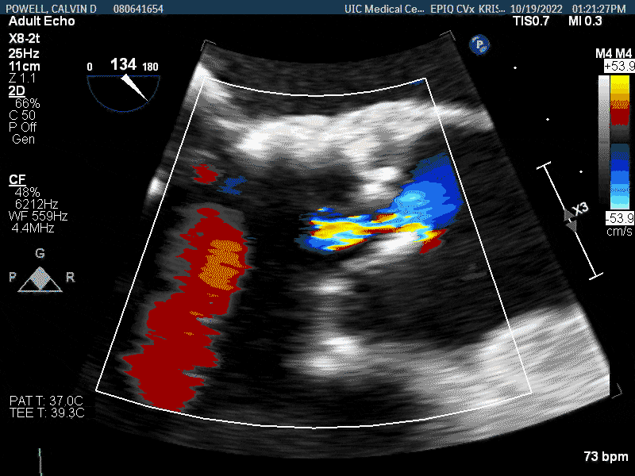
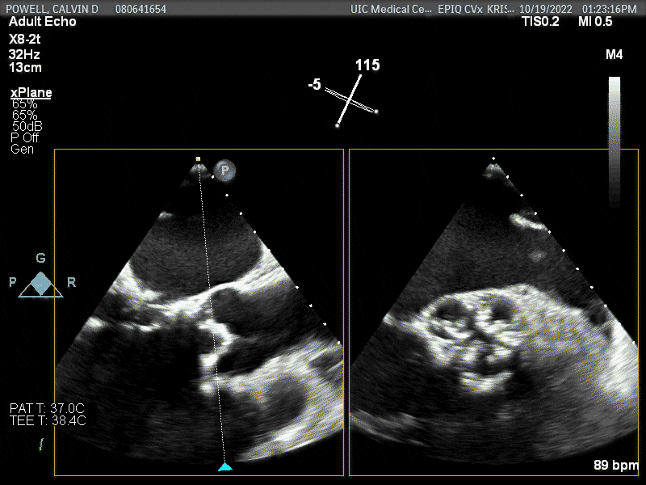
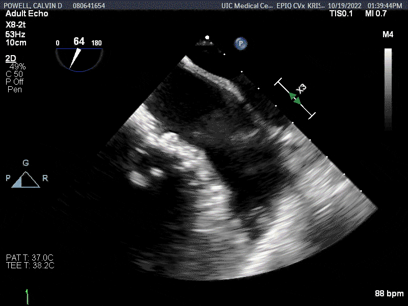
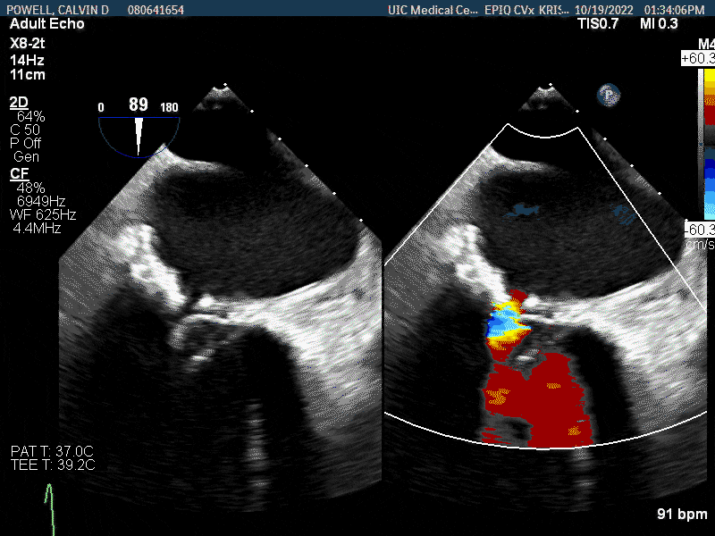
Severe biatrial enlargement.
Aortic valve tricuspid. There is moderate to severe calcification of all three leaflets, resulting in moderate aortic stenosis and moderate aortic regurgitation.
Mitral valve is rheumatic. There is significant calcification of the anterior and posterior leaflets, with resulting moderate mitral regurgitation. There is no evidence of significant mitral stenosis. There is significant mitral annular calcificaiton.
Cardiac cath (-1m)
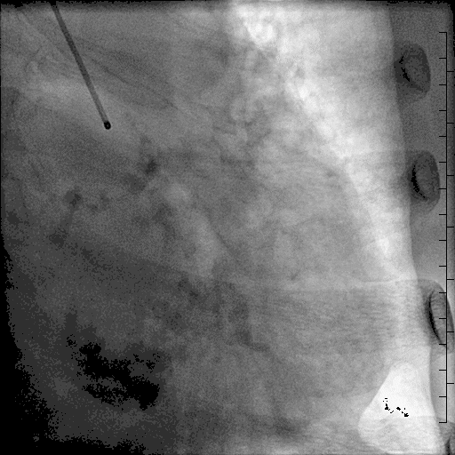
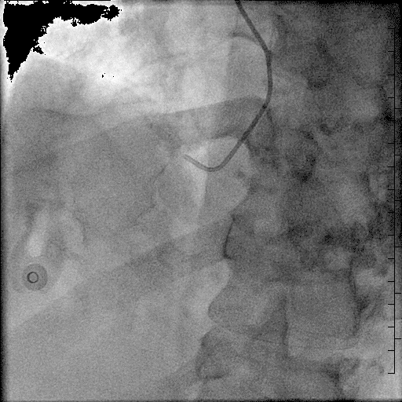
| Structure | Details |
|---|---|
| Left Ventricle | LV systolic pressure is normal. LV end diastolic pressure is normal. |
| Mitral Valve | The annulus is calcified. Severe mitral annular calcification |
| Aortic Valve | There is mild aortic valve stenosis. The aortic valve is calcified. Mean gradient 4.7 mm2 |
| Aortic Valve | Time | Date | Mean Gradient (mmHg) | Valve Area (cm2) | Valve Area Index (cm2/m2) |
|---|---|---|---|---|---|
| Aortic Valve Fick | 9:41 AM | 1/4/23 | 22.43 | 1.07 | 0.53 |
| Aortic Valve Thermo | 9:41 AM | 1/4/23 | 22.43 | 0.93 | 0.46 |
CTS pre-op (-1m)
Findings:
In AFIB on xarelto, states he is not able to take his full rx dose since has episodes of bleeding when takes prescribed dose.
Recommendations:
Discussed valve types including risks/benefits of both bioprosthetic and mechanical. Patient would like to move forward with bioprosthetic valve if possible. Discussed possibility of necessity of mechanical valve depending on intraoperative findings.
Plan
58 year-old gentleman with VHD, chronic/persistent AF, and CKD III after transplant who has had worsening moderate-to-severe AS, moderate MR and suspected symptomatic MS.
- Bioprosthetic SMVR
- Bioprosthetic SAVR
Would anyone amend or addend this plan?
Potential issues
- Why was the TEE not able to be seen by the surgeon, or why was it referenced by physician if not done? CERNER and EPIC changeover did happen at about this time
- Did a Heart Team meeting occur to discuss pre-operative strategies? Unclear
- Was further imaging indicated prior to making operative decision?
- Should LAA occlusion/exclusion be considered for this patient?
- Although ordered, why were no ECGs made? Rhythm strip found buried in media
- What follow-up system do we have in place for patients after consultation/referral? Order for RTC not seen in system
- Does inadequate AC suggest need for repeat pre-operative evaluation of LAA?
- What is the underlying disorder causing this rapidly degenerating VHD?
Operative Course
Operation Note (=0d)
PREOPERATIVE DIAGNOSES:
- Chronic renal failure, status post kidney transplant with some allograft dysfunction.
- Symptomatic severe aortic stenosis and severe mitral regurgitation in the setting of calcific rheumatic valvular disease.
- Hypertension.
OPERATIONS:
- Median sternotomy.
- Total cardiopulmonary bypass.
- Aortic valve replacement with a 23 mm Carpentier-Edwards pericardial bovine tissue valve.
- Mitral valve replacement with a 25 mm Carpentier-Edwards pericardial bovine tissue valve.
- Insertion of 2 temporary ventricular bipolar pacing wires.
- Insertion of 2 mediastinal and 1 right pleural chest tubes.
We excised 3 aortic valve leaflets and debrided the annulus of all the calcifications, after which, we did meticulous irrigation of the aortic annulus and then sized it to a size 23 mm Carpentier-Edwards pericardial bovine tissue valve sizer.
Note is made that the patient was in heart block while coming off bypass requiring pacing.
We inspected the mitral valve, which was found to be severely calcific with extensive calcifications involving the posterior leaflet and posterior annulus of the mitral valve and extending through the left ventricular wall, which was quite concerning. The anterior leaflet had also some calcifications. We decided to replace the valve as we deemed it nonrepairable and therefore, we excised the anterior leaflet and debrided some of the calcifications …
Post-op Note (+1d)
On dobutamine 8mcg, attempted to wean overnight but cardiac index dropped to 1.6. Epinephrine used initially post op but was weaned overnight and turned off. V paced at 80 overnight, turned down this AM patient does have underlying rhythm at 60. ABT completed, ABG without hypoxia or hypercarbia, OK parameters and patient was extubated to NC at 640AM.
CTS Attending Note (+3d)
Pt seen and examined while I chair. BP stable. Rhythm paced at 62/min. His intrinsic rate was 44 bpm. No afib.
Pt will need a permanent pacemaker prior to discharge. EP on board. Appreciate input. We hope to have the pacemaker placed Monday or Tuesday so he can be discharged mid week.
Post-op Note (+4d)
NPO overnight for possible PPM with EP. V paced at 60, has intrinsic rhythm of mid 50s. Feels SOB for the past 6 hours or so. No BM, making good urine. Received 1u plt overnight count is 83 from 51 yesterday.
Discharge (+21d)
Mr. Powell is a 58 year old male who underwent a mitral and aortic valve replacement for symptomatic moderate mitral regurgitation and moderate aortic stenosis and regurgitation. He received 1 platelet intraop. He was transferred to the ICU in stable condition. He was noted to be baseline bradycardic after surgery and EP was consulted for PPM which was placed on 2/1.
Transplant nephrology was consulted given patient had a kidney transplant in 2016. Post operative echo showed large left atrial appendage thrombus and patient preferred to be anticoagulated with eliquis. GI was consulted for intermittent bloody stools and thought likely to be internal hemorrhoids and deferred colonoscopy to 3 months post discharge. Aspirin held and eliquis continued given risks of stroke remain high given size and location of thrombus, hemoglobin and hemodynamics remained stable and concern for large bleed were low. Pacemaker set to 80 BPM to help with cardiac output. Ongoing diuresis with IV lasix given patient had enlarged IVC on echo.
On 2/14 patient underwent pericardial window with drainage of 650cc of serosanguineous fluid and immediate improvement in hemodynamics. Renal function continued to improve. Sleep medicine consult was placed as RN noticed patient would snore and desaturate at night- patient preferred to do sleep study after discharge. Patient was deemed stable for discharge. Extensive time was taken to explain discharge instructions to both patient and wife. Numbers were given in the event patient would need to contact the team prior to follow up visit 2/21/2023.
Summary
- Day 0: SMVR/SAVR, ?CHB
- Day 1: Intermittent pacing needed
- Day 3: LA mass seen on TTE, concern for HIT/thrombycytopenia, and AoV PPM
- Day 4: TEE shows large, mobile LAA thrombus
- Day 5: SC-PPM placed
- Day 10: MV with thickening/vegetation + large pericardial effusion
- Day 17: Pericardial window made
- Day 21: Discharged home
Left Atrial Appendage
TTE post-op (+3d)
There is a large left atrial echodensity that is concerning for thrombus.
Figure 7: LA structure seen in surface echocardiogram
TEE post-op (+4d)
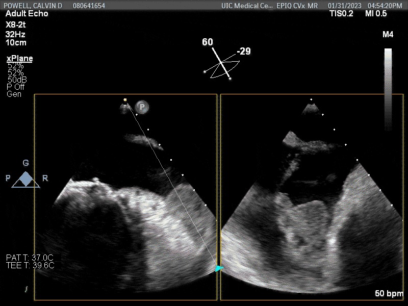
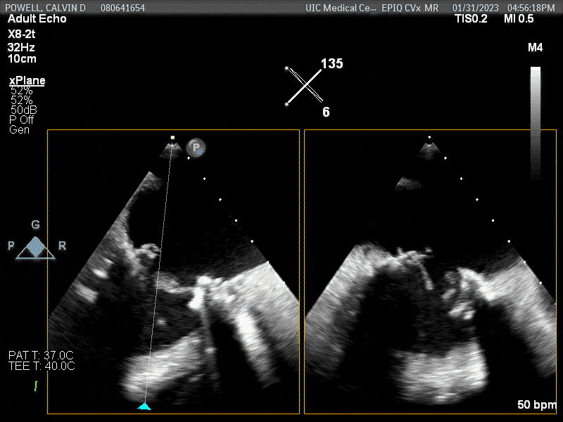
Left atrial appendage has a thrombus. Large mobile thrombus on the interior of the left atrial appendage.
How would you manage the thrombus?
Intra-operative TEE showing AV and LAA
Potential issues
- Why was the LAA not closed or ligated during surgery?
- How do we decide appropriate secondary interventions at time of surgery? Ex: addressing aortic valve at the same time as mitral valve
- Should cases routinely be discussed in an interdisciplinary/multidisciplinary manner? Heart Team meetings
- Would having the LAA closed or ligated during surgery improve stroke risk?
- Does the patient have an increased risk of stroke now?
Surgical closure…
- JTCVS 2018:(Ando2018?) Meta-analysis of for LAA closure during surgery, 7 articles (n = 4k) showed reduction in mortality (HR = 0.4) and CVA (HR = 0.6)
- JAMA 2018:(Yao2018?) Retrospective cohort study (n = 75k) of surgical LAAO versus not showed lower risk of stroke (HR = 0.7) and mortality (HR = 0.7)
- NEJM 2021:(Whitlock2021?) RCT (n = 4.7k) of CHA2DS2VASC ≥ 2 showed LAAO had reduced CVA/embolism risk (HR = 0.7) … LAAOS III trial stopped early due to efficacy (Verma2021?)
Figure 9: 2-fold reduction in risk of CVA in long-term follow-up after surgical LAAO (Madsen2022?)
Bioprosthetic Aortic Valve Patient-Prosthetic Mismatch
TTE post-op (+3d)
There is a well seated, bioprosthetic valve in the mitral position (25mm Carpentier Edwards,
Surgeon). Leaflet tips are not well visualized. Mean transmitral diastolic gradient is 4 mm Hg at a HR of 60 bpm. There is at least some degree of regurgitation, but difficult to visualize due to shadowing. There is a well seated, bioprosthetic valve in the aortic position (23mm Carpentier Edwards;Surgeon). Leaflet tips are not well visualized. Mean gradient 26 mmHg and peak velocity of 3.5 m/s. There is trace periprosthetic regurgitation. There is also some degree of intraprosthetic regurgitation, but difficult to quantify on current study.
TTE of AV prior to discharge (+10d)
There is a well-seated bioprosthetic valve in the aortic position (bioAVR, 23mm Carpentier Edwards). Bioprosthetic leaflets not well seen, though appear to be normally thin and mobile consistent with normal leaflet function. Mean gradient 26 mmHg and peak velocity of 3.5 m/s and acceleration time around 95msec and DI 0.45 suggestive of patient prosthesis mismatch.
There appears to be very eccentric, mild-moderate bioAVR regurgitation that is likely periprosthetic, seen along the mitral-aortic continuity.
TTE of MV prior to discharge (+10d)
There is a well-seated bioprosthetic valve in the mitral position (bioMVR, 25mm Carpentier Edwards). Bioprosthetic leaflets not well seen, though there appears to be some leaflet thickening and reduced excursion of one of the leaflets. Elevated mean transmitral diastolic gradient 6 mm Hg at a HR of 60 bpm.
There is a small highly-mobile echodensity seen along the ventricular surface of the bioMVR measuring approximately 7mm in length and 3mm in width (i.e. image 34); similar echodensity not well seen on prior TTE 1/30/2023 or TEE 1/31/2023. Differential includes residual chordal structure (not seen on prior echos) or possibly a new vegetation. Consider further evaluation with TEE if clinically indicated.
Valvular status
Aortic valve
- Severely calcified leaflets
- mean gradient 24 mmHg
- peak velocity of 3.2 m/s
- AVA 1.4 cm2
- Normal bioprosthetic leaflets
- Mean gradient 26 mm Hg
- Peak velocity of 3.5 m/s
- AT of 95 ms, DI of 0.45
Mitral valve
- Rheumatic mitral valve
- Mild anterior/posterior leaflet thickening
- Mean gradient 5 mmHg @ 70 bpm
- Moderate mitral regurg
- Severe MAC
- Bioprosthetic mitral valve
- Leaflet thickening and reduced excursion
- Mobile echodensity seen (new), 7 mm x 3 mm
- Mean gradient 6 mm Hg @ 60 bpm
Potential issues
- How are surgical valves sized?
- Should adjunctive imaging be performed prior to surgery? Undersizing is a risk that may not be seen intra-operatively
- Is the patient symptomatic from these increased gradients (compared to before valve replacement)?
Valve sizing…
- For SAVR, sizing occurs intra-operatively, incorporating valve external diameter, stent structure, internal diameter, etc.
- Small study of individuals undergoing SAVR (n = 80) had CT imaging to predict TAVR size, and over 40% the SAVR was undersized compared to predicted TAVR (1)
- Hemodynamic differences by valve type occur due to idiosyncratic patient factors that interact with valve profile
- Valve hemodynamics can be predicted per-patient using CT imaging,(Deeb2020?) suggesting potential benefit for more liberal pre-SAVR testing (Houtom2020?)
- Imaging can also help with predicting those at risk for PPM (Pibarot2019?)
Pacemaker
ECG changes
Figure 10: ECG prior to surgery shows fine AF, QRS < 100 ms
Figure 11: Intraoperative epicardial ventricular pacing
Figure 12: ECG after surgery
What is your ECG read?
- Atrial fibrillation
- Shifting QRS (or progressive fusion)
- IVCD, with QRS ~ 120 ms
EP consult (+3d)
Prior to surgery, patient has one prior ECG in our system from 10/2022 that shows afib rate 80’s. No known ECG’s in sinus rhythm. Since the surgery, telemetry examined shows a lack of p waves and patient 100% v-paced, has epicardial pacer since surgery. Setting: VVI rate: 60
EP contacted on
DatebySurgeonto re-address need for pacemaker. When rate decreased to 40 bpm, appears that intrinsic rhythm has not yet recovered. At this time, it is reasonable to proceed with PPM planning with continued monitoring of rhythm to see if native rhythm returns.
HR in th 60s by temp pacer, and 40s when turned off. +2 radial pulse. Warm ext, no edema. Bilateral crackles however. Distant S1/S2. Pulmonary edema seen on CXR. ECG c- wide junctional escape in 40s with no P waves (suspected AF underlying). TTE c- potential LA thrombus noted (versus artifact).
EP Follow-up (+4d)
Junctional escape pattern after SMVR/SAVR, concern for high grade AV block, in setting of AF:
1. Agree with the CTS consideration of DC-PPM. 2. Normal LVEF suggests resynchronization not needed at this time. 3. Would prefer to have PLT closer to 100k prior to procedure 4. Recommend IV diuresis today to help c- edema (to facilitate positioning for procedure) 5. Will plan for placement tomorrow AM (NPO @ MN) unless other imaging or interventions are needed for TTE finding. 6. Will call CTS in AM to confirm plan.
EP follow-up (+5d)
High grade AV block in setting of persistent AF after SMVR/SAVR, with new dx of LA thrombus d/t ?HIT:
1. As pt may have changes in AC options d/t this, we will defer DC-PPM placement until resolution or a plan is solidified. We can do this procedure under oral AC but would wait until this LA thrombus issue has resolved before proceeding.
- Of note, he is less rate dependent on the pacemaker, as has been able to generate rates as high as mid-60s. We set his back-up rate at 50 for now.
- Will continue to follow along, and have initiated the conversation with IC/general cards about interventions. TEE pending.
Pacemaker placement (+6d)
A Boston Scientific Model Number 7841, Serial Number 1240738 ventricular pacing electrode was advanced into the RA (is is to note that the RA is markedly dilated) and we recorded the electrical activity at multiple locations. The Atria in in AF with significant portion of the atria is either in very fine AF or silent, likely scarred tissues. An organized Afib was noted in the PL at the AV junction. Furthermore, we have given consideration to placed CS LV pacing lead but the recent MVR makes this effort difficult. Given this presentation a decision was made to place a SC PM.
Device parameters:
Mode: VVIR
Base/max track: 60/120 BPM
RV lead: Paced V waves 609 ohms/0.4 mV@0.4 ms; programmed 2.5 mV, 3.5V@0.4ms
When would you have placed a pacemaker?
Potential issues
- What was the underlying rhythm? AF with slow ventricular response and surgical IVCD?
- Would knowing the underlying diagnosis change management? Discrepancy between ECG read and rhythm assessment multiple times throughout chart
- Why was the need for pacemaker escalated/rushed?Are there timelines required for discharge?
- Does the underlying indication matter for the intervention? Difference between junctional escape and AF with slow response
- Did the patient need a pacemaker now, or could this have waited?
- Will the patient develop cardiomyopathy from RV pacing? Particularly in setting of LFLG AS
- Was his native, post-op conduction disease better or worse than RV pacing?
- How do we assess post-operative conduction disease? What is the expected risk?
Conduction system damage…
- Risk of PPM placement is rare (<2%) after SAVR alone (n = 663) (Hwang2017?)
- High grade AVB after mitral valve surgery is also rare (<4%), however on autopsy, 25% of AV nodal arteries run by the annulus of the MV (Berdajs2008?)
- Rate of conduction disease after MV repair/replacement (n = 69) had 2% rate of pacemaker placement, associated with 1) bypass time (OR = 3.2) and 2) pre-existing RBBB (OR = 2.0) (VilesGonzales2021?)
- SAVR using suture-less valve (n = 184) had 1/5 develop new LBBB post-op, with… of these, 1/3 had recover (Lam2021?)
- CTSN investigators (DeRose2019?) showed that AF ablation, multivalve surgery (with MV replacement), and NYHA ≥ III had increased risk of PPM
Figure 13: Hazard for pacemaker placement TAVR (Mazzella2021?)
Recovery of conduction disease after SAVR
RV pacing alone…
Currently, CHB is managed with RV pacing, however may be benefit to CRT (BLOCK HF, (Curtis2013?)):
- Guidelines recommend LVEF ≤ 35 (IIa), although some benefit in intermediate LVEF
- Less evidence for ≥ 50%
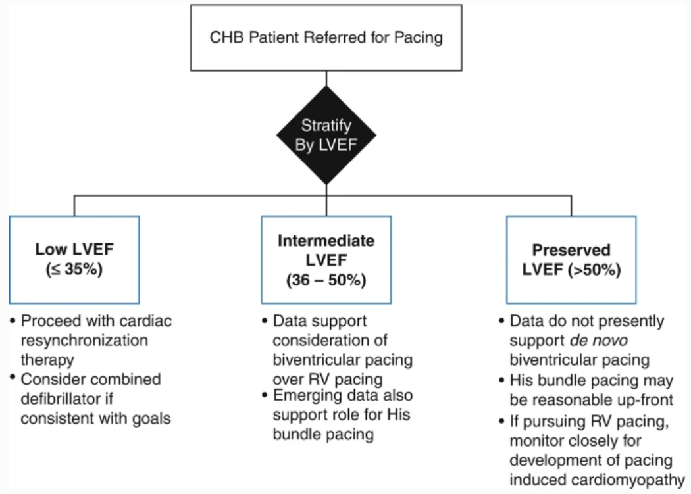
Figure 15: Evidence for CRT in HFpEF
Discussion
| Problem | System Issue |
|---|---|
| Incongruency on imaging | CERNER to EPIC switch for orders (TEE, ECG) |
| Lost to follow-up | Patient follow-up appointment scheduling |
| LAA occlusion | Interdiscpliniary vs. multidisciplinary evaluation of complex cases |
| LAA thrombus | Interdisciplinary communication (e.g. Anesthesia, CTS, CV) |
| Pacemaker timing | Indication for procedure and continuity of care |